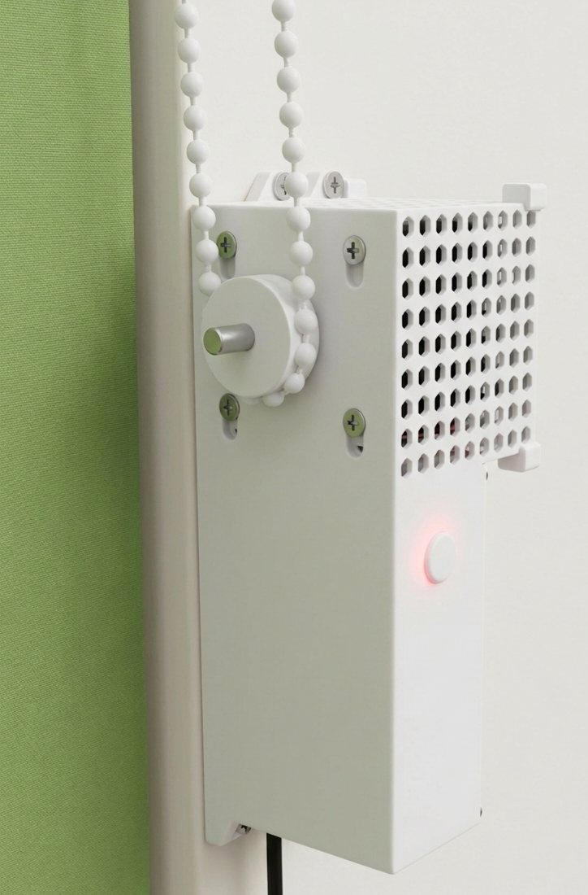
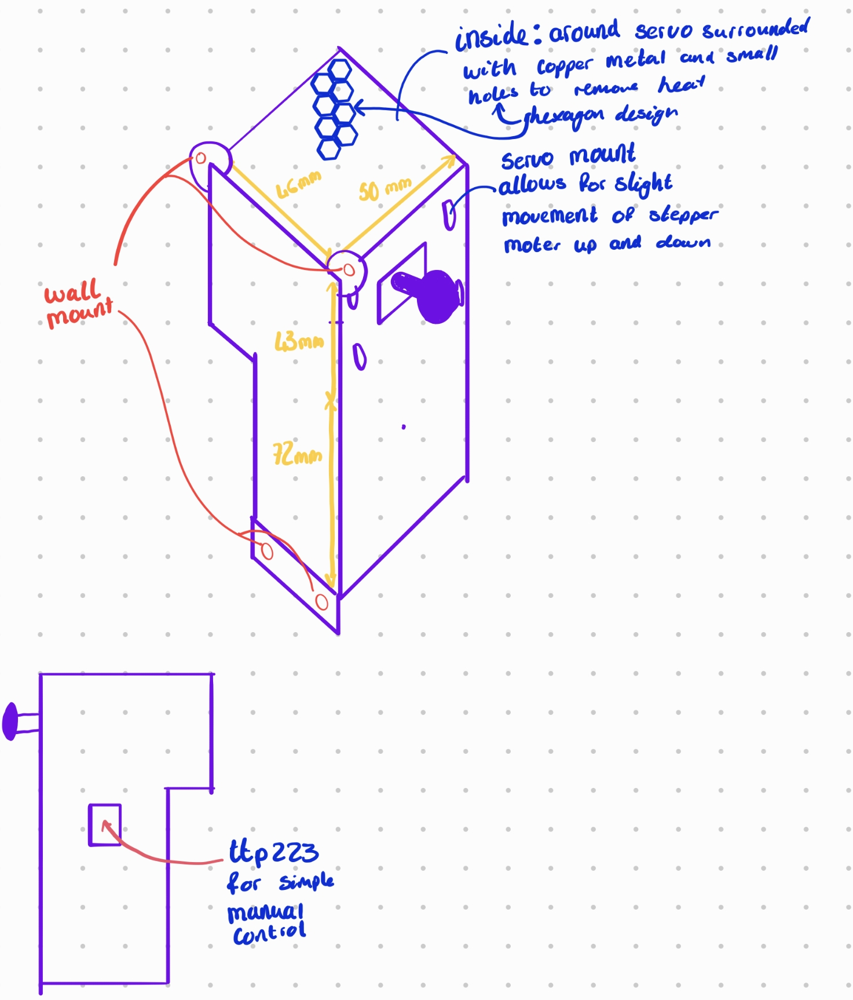

Open, close or stop
When it's stopped, a tap opens the blind if it's under 50% open and closes it if it's 50% or more. While it's moving, a tap slows it down to a stop.
Built in 2025
A stepper motor that hooks onto the bead chain of my roller blind and pulls it up and down. The blind and the wall are exactly as they were. I designed the PCB, the printed case and the firmware.

The blind already had a chain that worked fine, so I didn't want to replace it. Instead the controller grips that chain: a wheel on the motor pulls the beads round, and the case screws to the wall beside the window.
I can move it from the app, by voice, or with the touch pad on the front. The ESP32-C6 handles the motor, the touch input and the schedules itself. The app goes through MQTT, voice goes through SinricPro, and the weather-based rules need fresh data from the internet. The settings are saved on the device.

The touch pad goes into the ESP32-C6. The ESP32 tells the motor driver when to step and which way to turn, and the driver powers the motor coils. Wi-Fi connects it to the app and the other services.
The touch signal comes in on GPIO 21.
Step on GPIO 4, direction on GPIO 5, enable on GPIO 2.
The driver powers the coils and the motor turns the chain.
Wi-Fi to the MQTT broker, SinricPro and OpenWeatherMap.
Every step pulse from the ESP32-C6 turns the motor a tiny amount through the TMC2209 driver. I chose the TMC2209 because it's quiet. With StealthChop2 and microstepping it's much less noisy than a basic driver, which matters for something that moves in a bedroom first thing in the morning.
The steps come from a 20 kHz hardware timer interrupt, separate from the Wi-Fi code, so a busy network doesn't make the motor stutter.
Normal moves ramp the speed up at the start and down at the end, so the chain doesn't jerk.
There's no encoder. It counts steps from the calibrated top and bottom, so a missed step would make the position it reports slightly off.
One pad does everything on the device itself. What a press does depends on how long you hold it and whether the blind is already moving.
When it's stopped, a tap opens the blind if it's under 50% open and closes it if it's 50% or more. While it's moving, a tap slows it down to a stop.
While it's moving, a double tap stops the current move and starts one in the opposite direction. When it's stopped, it acts like a single tap.
Stops the motor without the slow-down and ignores the pad until you let go. Keeping your finger on it won't go on to reset the Wi-Fi.
Clears the saved Wi-Fi details and restarts setup. The travel calibration is kept. Let go once it restarts.
Moves only work once the travel limits are calibrated. A press has to stay stable for 50 ms before the firmware believes it, which filters out short electrical glitches.
A confirmed touch starts the hold timer.
Letting go starts the 400 ms double-tap window.
If the 400 ms runs out, it's a single tap.
Another touch inside the window is a double tap.
On release, or after a 5 s timeout.
Holding for 1.5 s during a move stops the motor.
Let go before the next command.
TouchManager code in the firmware download.The Wi-Fi reset is a separate path. When the motor is stopped, staying in Pressed for 10 seconds clears the Wi-Fi settings and restarts the controller. If a hold has already stopped the motor, it stays in Hold handled until you let go, so the same press can't do both.
All five rules run on the controller, but they don't all get their information from it. The fixed schedules use its clock, the sunset and heat rules need weather data, and the empty-room rule depends on the light switch.
Opens the blind in small steps over a period I choose, up to two hours, so the room gets lighter gradually instead of all at once.
Gets the sunset time from OpenWeatherMap and closes the blind then, so the schedule follows the seasons without me touching it.
Closes the blind at night and stops the other rules moving it until the morning routine.
The light switch publishes whether the room is occupied over MQTT. If it stays empty for the delay I've set, the blind closes.
Closes the blind when the outside temperature from OpenWeatherMap goes above a threshold.
The ESP32-C6 only needs four pins for this. The rest of the board is power.
| Part | Model | Pin | Signal | What it does |
|---|---|---|---|---|
| Motor enable | TMC2209 | GPIO 2 | Digital out | Enables the driver (active low) |
| Step | TMC2209 | GPIO 4 | Timer interrupt | 20 kHz step pulses |
| Direction | TMC2209 | GPIO 5 | Digital out | Which way the motor turns |
| Touch pad | TTP223 | GPIO 21 | Digital in | Capacitive touch (active high) |
| Power part | Model | Rating | What it does |
|---|---|---|---|
| Input | USB-C connector | 5 V, 2 A | Power from a USB supply |
| Protection | TVS diode and fuse | 5.6 V clamp, 2 A | Over-voltage and over-current protection |
| Regulator | AMS1117-3.3 | 5 V to 3.3 V | Logic rail for the ESP32-C6 and touch pad |
All the grounds (USB-C, regulator, ESP32 and the rest) join one continuous ground plane on the PCB to keep the noise down.
Wi-Fi carries the app commands and the weather and time updates, and Bluetooth is for setup and recovery. The touch pad always works, but anything that needs the network waits until it's back.
The Wi-Fi details go in over Bluetooth during setup. Holding the pad for 10 seconds with the motor stopped clears them and restarts setup, without losing the calibration.
Voice commands go through SinricPro, and the controller reports its estimated position back. This part needs the internet.
It publishes its position, motor data and diagnostics to my broker, and subscribes to the light switch so the empty-room rule works.
Sunset and temperature come from OpenWeatherMap once a day. Time comes from NTP, and if a network blocks NTP it reads the time from an HTTP response header instead.
Wi-Fi 6 lets the controller and a compatible router agree on wake-up windows, so the radio can sleep in between. The drawing below shows the idea. It isn't a current measurement, and I haven't measured the saving on this build yet.
The calibration and schedules live in flash, and a power cut in the middle of a save shouldn't lose them.
Settings save when they change, but never more than once every two seconds, to save wear on the flash.
There are two settings slots. At start-up the firmware checks the checksum and loads the other copy if the main one is broken.
Repeated unexpected restarts put it into recovery mode, which stops normal motor moves so I can work out what's wrong before it tries again.
If I change the format of the saved settings in a firmware update, it checks the version that's stored and moves the compatible values across.
| Processor | ESP32-C6, 32-bit RISC-V, 160 MHz |
|---|---|
| Radio | 2.4 GHz Wi-Fi 6 and Bluetooth LE 5, with Target Wake Time |
| Power | USB-C, 5 V 2 A, with a TVS diode and fuse |
| Rails | 5 V for the motor, 3.3 V logic from an AMS1117 |
| Memory | 4 MB flash and 512 KB SRAM, with the settings in two CRC32-checked slots |
| Motor | Stepper on a TMC2209 with StealthChop2, AccelStepper, 20 kHz timer |
| Position | 64-bit step counter (int64_t), no encoder |
| Touch | TTP223 capacitive pad, five-state debounced state machine |
| Voice | SinricPro over a WebSocket, for Alexa and Google Home |
| Diagnostics | Six ring buffers covering Wi-Fi, MQTT and the motor |
| Recovery | Safe mode, and booting from the backup settings slot |
These are the actual files from my build. They're not a tested kit, so check the revision and the measurements against your own blind before you print or order anything.
The first thing I want to try is setting up the TMC2209 over UART instead of relying only on its hardware pins. That would let the firmware change the driver settings and read its diagnostics, which should make setup and fault-finding easier.
I'm also thinking about separate up and down buttons and a clearer status light. Those are ideas for the next build, not things the current one does.
In the meantime you can try the blinds controls in the Zaylo Remote demo, which has pretend blinds you can move around.